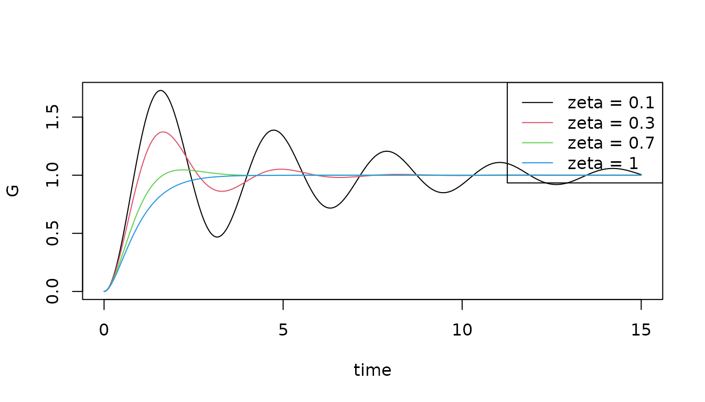
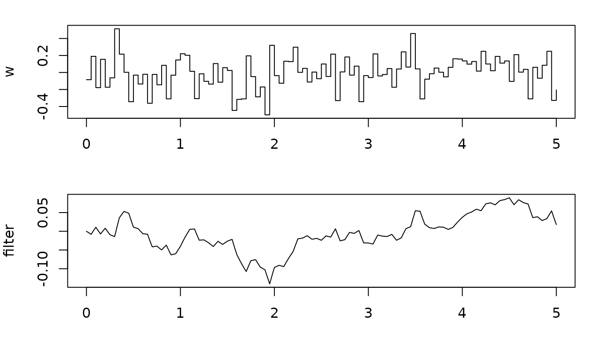

A compiled plan can be run many times with different parameters.
Model parameters are declared in sim_model(params = ) and
referenced from blocks with sim_param().
A second-order system
G(s) = \frac{\omega^2}{s^2 + 2\zeta\omega s + \omega^2} with \omega = 2 and a unit step input. Parameters can be any R value, including vectors, so the whole denominator is one parameter:
second <- sim_model("second_order", params = list(den = c(1, 0.8, 4), num = 4))
sim_add_block(second, "step", "u", time = 0)
sim_add_block(second, "transfer_function", "G",
num = sim_param("num"), den = sim_param("den"))
sim_connect(second, "u", "G")
plan <- sim_compile(second)Parameters can be combined where they are used. Writing the system with \zeta and \omega as parameters keeps the denominator in its textbook form; the expression is evaluated again for every run:
named <- sim_model("second_order_zw", params = list(zeta = 0.2, w = 2))
sim_add_block(named, "step", "u", time = 0)
sim_add_block(named, "transfer_function", "G",
num = sim_param("w")^2,
den = sim_param_expr("c(1, 2 * zeta * w, w^2)"))
sim_connect(named, "u", "G")
zw <- sim_compile(named)
peak_of <- function(p) max(sim_signal(sim_run(p, c(0, 15), times = seq(0, 15, 0.01)), "G"))
c(zeta_0.2 = peak_of(zw), zeta_0.5 = peak_of(sim_set_params(zw, zeta = 0.5)))
#> zeta_0.2 zeta_0.5
#> 1.526610 1.163029Model parameters are also visible by name inside
expression blocks and state machine guards and actions.
Sweeps
sim_sweep() takes a data frame with one row per run, or
a list of named lists for vector-valued parameters. summary
reduces each result to named numbers.
dens <- lapply(c(0.1, 0.3, 0.7, 1), function(z) list(den = c(1, 2 * z * 2, 4)))
peak <- function(r) {
y <- sim_signal(r, "G")
t <- sim_times(r)
outside <- which(abs(y - 1) > 0.02)
c(peak = max(y), settle = if (length(outside)) t[max(outside)] else 0)
}
s <- sim_sweep(plan, dens, tspan = c(0, 15), times = seq(0, 15, 0.01), summary = peak)
s
#> <sim_sweep> 4 run(s): success = 4
#> den peak settle status
#> 1 1, 0.4, 4 1.729245 14.84 success
#> 2 1, 1.2, 4 1.372318 5.61 success
#> 3 1, 2.8, 4 1.045988 2.98 success
#> 4 1, 4, 4 1.000000 2.91 success
cbind(zeta = c(0.1, 0.3, 0.7, 1), s$summary[c("peak", "settle")],
exact_peak = c(1 + exp(-pi * c(0.1, 0.3, 0.7) / sqrt(1 - c(0.1, 0.3, 0.7)^2)), 1))
#> zeta peak settle exact_peak
#> 1 0.1 1.729245 14.84 1.729248
#> 2 0.3 1.372318 5.61 1.372326
#> 3 0.7 1.045988 2.98 1.045988
#> 4 1.0 1.000000 2.91 1.000000The overshoot matches the classical formula 1 + e^{-\pi\zeta/\sqrt{1-\zeta^2}}.
cols <- seq_along(s$results)
matplot(sim_times(s$results[[1]]), sapply(s$results, sim_signal, "G"),
type = "l", lty = 1, col = cols, xlab = "time", ylab = "G")
legend("topright", paste("zeta =", c(0.1, 0.3, 0.7, 1)), col = cols, lty = 1)
Reuse of the compiled structure
Each run calls sim_set_params(). When a new value keeps
sizes, feedthrough, state dimensions and sample times, the graph
analysis is reused; otherwise it is redone. Changing the order of the
denominator above would change the number of states and trigger a fresh
analysis automatically.
Monte Carlo
sim_monte_carlo() draws parameter sets under a fixed
seed. The caller’s random stream is saved and restored, so the
experiment is reproducible and does not disturb other random code:
set.seed(2024)
before <- runif(1)
set.seed(2024)
mc <- sim_monte_carlo(plan, n = 50,
sampler = function(i) list(den = c(1, 2 * runif(1, 0.1, 0.9) * 2, 4)),
seed = 1, tspan = c(0, 15), times = seq(0, 15, 0.05), keep = FALSE,
summary = function(r) c(peak = max(sim_signal(r, "G"))))
after <- runif(1)
identical(before, after)
#> [1] TRUE
summary(mc$summary$peak)
#> Min. 1st Qu. Median Mean 3rd Qu. Max.
#> 1.002 1.043 1.126 1.198 1.277 1.704
hist(mc$summary$peak, main = "Peak response", xlab = "peak")
Running it again with the same seed returns identical numbers.
Noise inputs
white_noise blocks draw a value at each sample hit from
their own seed and the hit index. Results are reproducible and
independent of the global random state:
nm <- sim_model("noisy")
sim_add_block(nm, "white_noise", "w", sd = 0.2, period = 0.05, seed = 3)
sim_add_block(nm, "transfer_function", "filter", num = 1, den = c(0.5, 1))
sim_connect(nm, "w", "filter")
r1 <- sim_run(sim_compile(nm), c(0, 5))
r2 <- sim_run(sim_compile(nm), c(0, 5))
identical(r1$signals, r2$signals)
#> [1] TRUE
plot(r1, c("w", "filter"))
Failures inside experiments
Runs that fail are kept with status "failed" and missing
summaries; they are never silently dropped. Use s$status
and s$messages to inspect them.
Parallel runs
cores > 1 runs simulations with
parallel::mclapply() on Unix-like systems. Results do not
depend on the number of cores, because every run is deterministic and
seeds are drawn before the runs start.